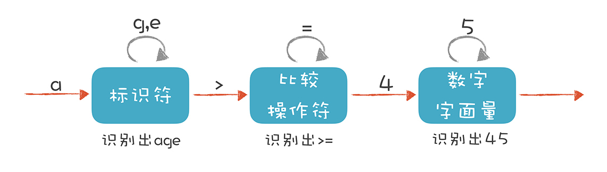
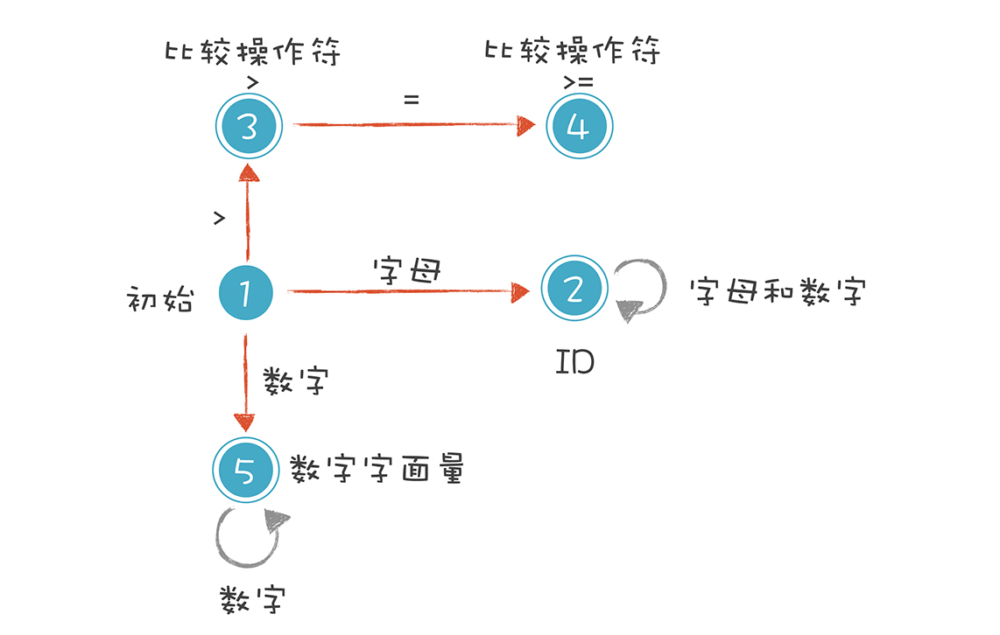
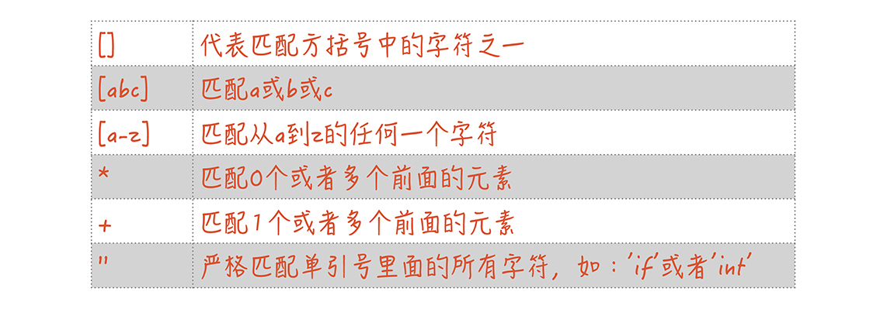
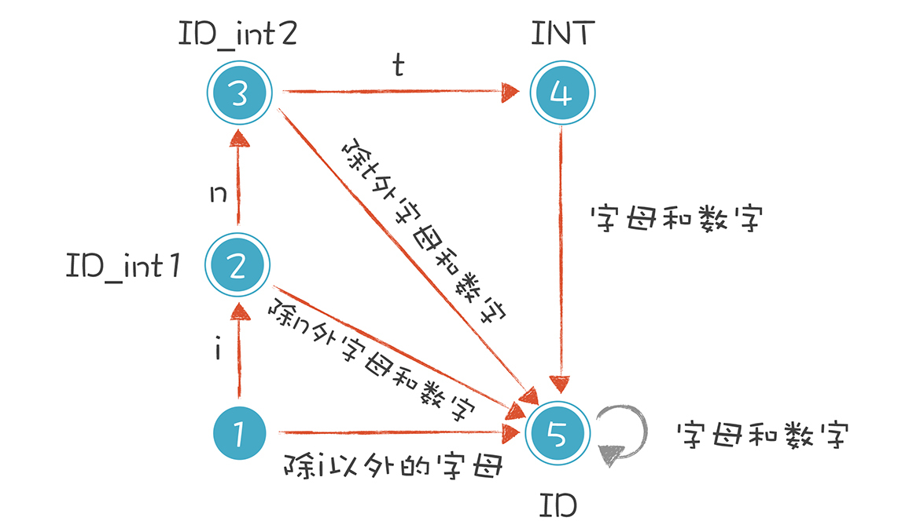

- 00 开篇词 为什么你要学习编译原理？.md
- 01 理解代码：编译器的前端技术.md
- 02 正则文法和有限自动机：纯手工打造词法分析器.md
- 03 语法分析（一）：纯手工打造公式计算器.md
- 04 语法分析（二）：解决二元表达式中的难点.md
- 05 语法分析（三）：实现一门简单的脚本语言.md
- 06 编译器前端工具（一）：用Antlr生成词法、语法分析器.md
- 07 编译器前端工具（二）：用Antlr重构脚本语言.md
- 08 作用域和生存期：实现块作用域和函数.md
- 09 面向对象：实现数据和方法的封装.md
- 10 闭包： 理解了原理，它就不反直觉了.md
- 11 语义分析（上）：如何建立一个完善的类型系统？.md
- 12 语义分析（下）：如何做上下文相关情况的处理？.md
- 13 继承和多态：面向对象运行期的动态特性.md
- 14 前端技术应用（一）：如何透明地支持数据库分库分表？.md
- 15 前端技术应用（二）：如何设计一个报表工具？.md
- 16 NFA和DFA：如何自己实现一个正则表达式工具？.md
- 17 First和Follow集合：用LL算法推演一个实例.md
- 18 移进和规约：用LR算法推演一个实例.md
- 19 案例总结与热点问题答疑：对于左递归的语法，为什么我的推导不是左递归的？.md
- 20 高效运行：编译器的后端技术.md
- 21 运行时机制：突破现象看本质，透过语法看运行时.md
- 22 生成汇编代码（一）：汇编语言其实不难学.md
- 23 生成汇编代码（二）：把脚本编译成可执行文件.md
- 24 中间代码：兼容不同的语言和硬件.md
- 25 后端技术的重用：LLVM不仅仅让你高效.md
- 26 生成IR：实现静态编译的语言.md
- 27 代码优化：为什么你的代码比他的更高效？.md
- 28 数据流分析：你写的程序，它更懂.md
- 29 目标代码的生成和优化（一）：如何适应各种硬件架构？.md
- 30 目标代码的生成和优化（二）：如何适应各种硬件架构？.md
- 31 内存计算：对海量数据做计算，到底可以有多快？.md
- 32 字节码生成：为什么Spring技术很强大？.md
- 33 垃圾收集：能否不停下整个世界？.md
- 34 运行时优化：即时编译的原理和作用.md
- 35 案例总结与热点问题答疑：后端部分真的比前端部分难吗？.md
- 36 当前技术的发展趋势以及其对编译技术的影响.md
- 37 云编程：云计算会如何改变编程模式？.md
- 38 元编程：一边写程序，一边写语言.md
- 加餐 汇编代码编程与栈帧管理.md
- 用户故事 因为热爱，所以坚持.md
- 第二季回归 这次，我们一起实战解析真实世界的编译器.md
- 结束语 用程序语言，推动这个世界的演化.md
02 正则文法和有限自动机：纯手工打造词法分析器
上一讲，我提到词法分析的工作是将一个长长的字符串识别出一个个的单词，这一个个单词就是Token。而且词法分析的工作是一边读取一边识别字符串的，不是把字符串都读到内存再识别。你在听一位朋友讲话的时候，其实也是同样的过程，一边听，一边提取信息。
那么问题来了，字符串是一连串的字符形成的，怎么把它断开成一个个的Token呢？分割的依据是什么呢？本节课，我会通过讲解正则表达式（Regular Expression）和有限自动机的知识带你解决这个问题。
其实，我们手工打造词法分析器的过程，就是写出正则表达式，画出有限自动机的图形，然后根据图形直观地写出解析代码的过程。而我今天带你写的词法分析器，能够分析以下3个程序语句：
- age >= 45
- int age = 40
- 2+3*5
它们分别是关系表达式、变量声明和初始化语句，以及算术表达式。
接下来，我们先来解析一下“age >= 45”这个关系表达式，这样你就能理解有限自动机的概念，知道它是做词法解析的核心机制了。
解析 age >= 45
在“01 | 理解代码：编译器的前端技术”里，我举了一个词法分析的例子，并且提出词法分析要用到有限自动机。当时，我画了这样一个示意图：

我们来描述一下标识符、比较操作符和数字字面量这三种Token的词法规则。
- 标识符：第一个字符必须是字母，后面的字符可以是字母或数字。
- 比较操作符：>和>=（其他比较操作符暂时忽略）。
- 数字字面量：全部由数字构成（像带小数点的浮点数，暂时不管它）。
我们就是依据这样的规则，来构造有限自动机的。这样，词法分析程序在遇到age、>=和45时，会分别识别成标识符、比较操作符和数字字面量。不过上面的图只是一个简化的示意图，一个严格意义上的有限自动机是下面这种画法：

我来解释一下上图的5种状态。
1.初始状态：刚开始启动词法分析的时候，程序所处的状态。
2.标识符状态：在初始状态时，当第一个字符是字母的时候，迁移到状态2。当后续字符是字母和数字时，保留在状态2。如果不是，就离开状态2，写下该Token，回到初始状态。
3.大于操作符（GT）：在初始状态时，当第一个字符是>时，进入这个状态。它是比较操作符的一种情况。
4.大于等于操作符（GE）：如果状态3的下一个字符是=，就进入状态4，变成>=。它也是比较操作符的一种情况。
5.数字字面量：在初始状态时，下一个字符是数字，进入这个状态。如果后续仍是数字，就保持在状态5。
这里我想补充一下，你能看到上图中的圆圈有单线的也有双线的。双线的意思是这个状态已经是一个合法的Token了，单线的意思是这个状态还是临时状态。
按照这5种状态迁移过程，你很容易编成程序（我用Java写了代码示例，你可以用自己熟悉的语言编写）。我们先从状态1开始，在遇到不同的字符时，分别进入2、3、5三个状态：
DfaState newState = DfaState.Initial;
if (isAlpha(ch)) { //第一个字符是字母
newState = DfaState.Id; //进入Id状态
token.type = TokenType.Identifier;
tokenText.append(ch);
} else if (isDigit(ch)) { //第一个字符是数字
newState = DfaState.IntLiteral;
token.type = TokenType.IntLiteral;
tokenText.append(ch);
} else if (ch == '>') { //第一个字符是>
newState = DfaState.GT;
token.type = TokenType.GT;
tokenText.append(ch);
}
上面的代码中，我用Java中的枚举（enum）类型定义了一些枚举值来代表不同的状态，让代码更容易读。
其中Token是自定义的一个数据结构，它有两个主要的属性：一个是“type”，就是Token的类型，它用的也是一个枚举类型的值；一个是“text”，也就是这个Token的文本值。
我们接着处理进入2、3、5三个状态之后的状态迁移过程：
case Initial:
state = initToken(ch); //重新确定后续状态
break;
case Id:
if (isAlpha(ch) || isDigit(ch)) {
tokenText.append(ch); //保持标识符状态
} else {
state = initToken(ch); //退出标识符状态，并保存Token
}
break;
case GT:
if (ch == '=') {
token.type = TokenType.GE; //转换成GE
state = DfaState.GE;
tokenText.append(ch);
} else {
state = initToken(ch); //退出GT状态，并保存Token
}
break;
case GE:
state = initToken(ch); //退出当前状态，并保存Token
break;
case IntLiteral:
if (isDigit(ch)) {
tokenText.append(ch); //继续保持在数字字面量状态
} else {
state = initToken(ch); //退出当前状态，并保存Token
}
break;
运行这个示例程序，你就会成功地解析类似“age >= 45”这样的程序语句。不过，你可以先根据我的讲解自己实现一下，然后再去参考这个示例程序。
示例程序的输出如下，其中第一列是Token的类型，第二列是Token的文本值：
Identifier age
GE >=
IntLiteral 45
上面的例子虽然简单，但其实已经讲清楚了词法原理，就是依据构造好的有限自动机，在不同的状态中迁移，从而解析出Token来。你只要再扩展这个有限自动机，增加里面的状态和迁移路线，就可以逐步实现一个完整的词法分析器了。
初识正则表达式
但是，这里存在一个问题。我们在描述词法规则时用了自然语言。比如，在描述标识符的规则时，我们是这样表达的：
第一个字符必须是字母，后面的字符可以是字母或数字。
这样描述规则并不精确，我们需要换一种严谨的表达方式，这种方式就是正则表达式。
上面的例子涉及了4种Token，这4种Token用正则表达式表达，是下面的样子：
Id : [a-zA-Z_] ([a-zA-Z_] | [0-9])*
IntLiteral: [0-9]+
GT : '>'
GE : '>='
我先来解释一下这几个规则中用到的一些符号：

需要注意的是，不同语言的标识符、整型字面量的规则可能是不同的。比如，有的语言可以允许用Unicode作为标识符，也就是说变量名称可以是中文的。还有的语言规定，十进制数字字面量的第一位不能是0。这时候正则表达式会有不同的写法，对应的有限自动机自然也不同。而且，不同工具的正则表达式写法会略有不同，但大致是差不多的。
我在本节课讲正则表达式，主要是为了让词法规则更为严谨，当然了，也是为后面的内容做铺垫。在后面的课程中，我会带你用工具生成词法分析器，而工具读取的就是用正则表达式描述的词法规则。到时候，我们会把所有常用的词法都用正则表达式描述出来。
不过在这之前，如果你想主动了解更完整的正则表达式规则，完全可以参考自己所采用的正则表达式工具的文档。比如，Java的正则式表达式工具在java.util.regex包中，在其Javadoc中有详细的规则说明。
解析int age = 40，处理标识符和关键字规则的冲突
说完正则表达式，我们接着去处理其他词法，比如解析“int age = 40”这个语句，以这个语句为例研究一下词法分析中会遇到的问题：多个规则之间的冲突。
如果我们把这个语句涉及的词法规则用正则表达式写出来，是下面这个样子：
Int: 'int'
Id : [a-zA-Z_] ([a-zA-Z_] | [0-9])*
Assignment : '='
这时候，你可能会发现这样一个问题：int这个关键字，与标识符很相似，都是以字母开头，后面跟着其他字母。
换句话说，int这个字符串，既符合标识符的规则，又符合int这个关键字的规则，这两个规则发生了重叠。这样就起冲突了，我们扫描字符串的时候，到底该用哪个规则呢？
当然，我们心里知道，int这个关键字的规则，比标识符的规则优先级高。普通的标识符是不允许跟这些关键字重名的。
在这里，我们来回顾一下：什么是关键字？
关键字是语言设计中作为语法要素的词汇，例如表示数据类型的int、char，表示程序结构的while、if，表述特殊数据取值的null、NAN等。
除了关键字，还有一些词汇叫保留字。保留字在当前的语言设计中还没用到，但是保留下来，因为将来会用到。我们命名自己的变量、类名称，不可以用到跟关键字和保留字相同的字符串。那么我们在词法分析器中，如何把关键字和保留字跟标识符区分开呢？
以“int age = 40”为例，我们把有限自动机修改成下面的样子，借此解决关键字和标识符的冲突。

这个思路其实很简单。在识别普通的标识符之前，你先看看它是关键字还是保留字就可以了。具体做法是：
当第一个字符是i的时候，我们让它进入一个特殊的状态。接下来，如果它遇到n和t，就进入状态4。但这还没有结束，如果后续的字符还有其他的字母和数字，它又变成了普通的标识符。比如，我们可以声明一个intA（int和A是连着的）这样的变量，而不会跟int关键字冲突。
相应的代码也修改一下，文稿里的第一段代码要改成：
if (isAlpha(ch)) {
if (ch == 'i') {
newState = DfaState.Id_int1; //对字符i特殊处理
} else {
newState = DfaState.Id;
}
... //后续代码
}
第二段代码要增加下面的语句：
case Id_int1:
if (ch == 'n') {
state = DfaState.Id_int2;
tokenText.append(ch);
}
else if (isDigit(ch) || isAlpha(ch)){
state = DfaState.Id; //切换回Id状态
tokenText.append(ch);
}
else {
state = initToken(ch);
}
break;
case Id_int2:
if (ch == 't') {
state = DfaState.Id_int3;
tokenText.append(ch);
}
else if (isDigit(ch) || isAlpha(ch)){
state = DfaState.Id; //切换回Id状态
tokenText.append(ch);
}
else {
state = initToken(ch);
}
break;
case Id_int3:
if (isBlank(ch)) {
token.type = TokenType.Int;
state = initToken(ch);
}
else{
state = DfaState.Id; //切换回Id状态
tokenText.append(ch);
}
break;
接着，我们运行示例代码，就会输出下面的信息：
Int int
Identifier age
Assignment =
IntLiteral 45
而当你试着解析“intA = 10”程序的时候，会把intA解析成一个标识符。输出如下：
Identifier intA
Assignment =
IntLiteral 10
解析算术表达式
解析完“int age = 40”之后，我们再按照上面的方法增加一些规则，这样就能处理算术表达式，例如“2+3*5”。 增加的词法规则如下：
Plus : '+'
Minus : '-'
Star : '*'
Slash : '/'
然后再修改一下有限自动机和代码，就能解析“2+3*5”了，会得到下面的输出：
IntLiteral 2
Plus +
IntLiteral 3
Star *
IntLiteral 5
好了，现在我们已经能解析不少词法了，之后的课程里，我会带你实现一个公式计算器，所以在这里要先准备好所需要的词法分析功能。
课程小结
本节课，我们实现了一个简单的词法分析器。你可以看到，要实现一个词法分析器，首先需要写出每个词法的正则表达式，并画出有限自动机，之后，只要用代码表示这种状态迁移过程就可以了。
我们总是说理解原理以后，实现并不困难。今天的分享，你一定有所共鸣。
反之，如果你在编程工作中遇到困难，往往是因为不清楚原理，没有将原理吃透。而这门课就是要帮助你真正吃透编译技术中的几个核心原理，让你将知识应用到实际工作中，解决工作中遇到的困难。
小试了词法分析器之后，在下一讲，我会带你手工打造一下语法分析器，并实现一个公式计算器的功能。
一课一思
很多同学已经用到过正则表达式，这是学计算机必懂的知识点，十分有用。正则表达式工具其实就可以看做一个通用的词法分析器。那么你都用正则表达式功能做过哪些事情？有没有发现一些软件工具因为支持正则表达式而变得特别强大的情况呢？可以在留言区与大家一起交流。
最后，感谢你的阅读，如果这篇文章让你有所收获，也欢迎你将它分享给更多的朋友。
另外，为了便于你更好地学习，我将本节课的示例程序放到了GitHub上，你可以看一下。
© 2019 - 2023 Liangliang Lee. Powered by gin and hexo-theme-book.